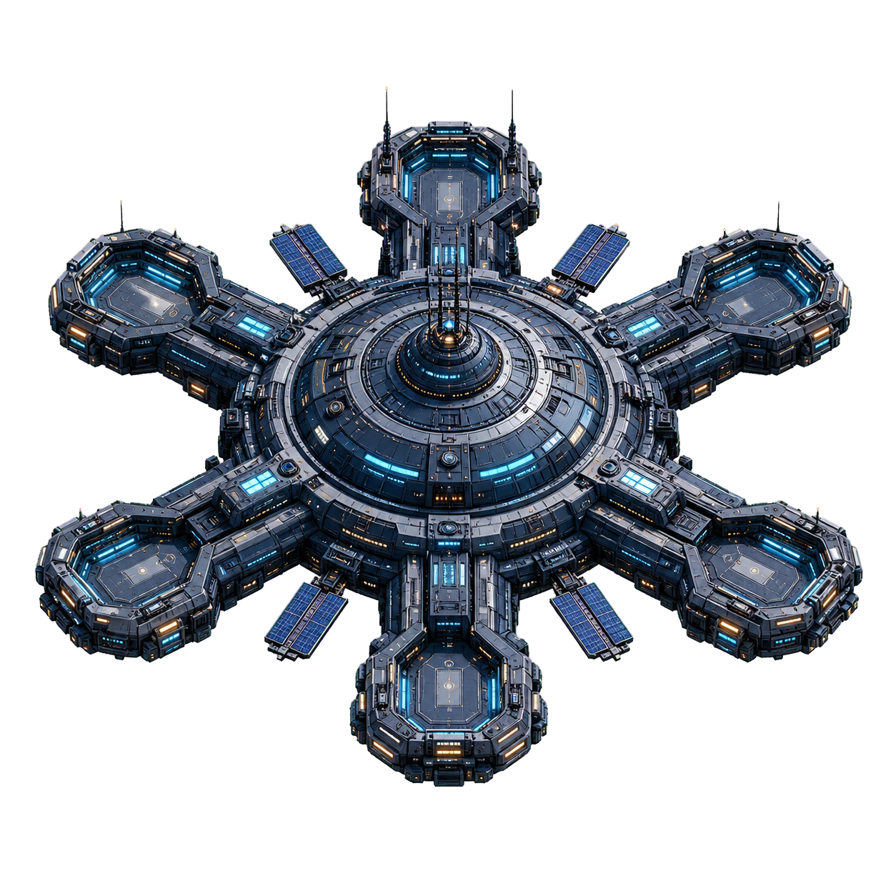

跨越普通跃迁与奇点超越永久累计
主动采集
信标指挥台
下一航标
部署拾荒无人机
0 / 15
永久增幅
×1.00
成就增幅
×1.00
本轮采集
0
航站态势
指挥官总览
自动化单元
0
当前航线设施总数
舰队战斗力
30
主动远征能力
基地防御力
25
自动抵御袭击
边境雷达
尚未解锁
随机遭遇 · 每小时大袭击
深空跃迁
重启航线，提炼星核
本轮采集 25K 星尘后可获得第 1 枚星核。
自动化生产
轨道舰队
0 个单元正在工作
轨道十分安静，等待你的第一道指令。
重建成本 ×1.00
轨道扩建
星港附属建筑
建筑总等级
0 / 72
六类近域清剿各产出一种专用材料。每座附属建筑需要对应材料与大量星尘，并会在普通跃迁后继续工作。
奇点超越将重置建筑与材料
自动生产
×1.00
设施成本
-0.0%
舰队战斗
×1.00
基地防御
×1.00
材料掉落
×1.00
长期进展
研究终端
总计星尘0
手动回收0
跃迁次数0
航行时间0分
轮回经济
星核共鸣交易所
可用星核
0
历史获得星核
0
消费星核不会降低该数值
当前星核产量
×1.00
影响每次跃迁奖励
离线收益上限
8小时
可通过商店继续扩展
无需消费 · 自动生效
按历史星核总数解锁
星核共鸣里程碑
边境防卫
轨道战斗指挥部
胜利0
失利0
永久强化
舰队军械库
舰队战斗力
30
武器等级 0
基地防御力
25
防御等级 0
自动防御
扫描中
边境雷达
小规模袭击随机出现；大袭击每小时一次，离线期间同样结算。
防卫系统待命
--:--
短程作战 · 掉落星港建材
清剿小队就绪
近域清剿
六类初级威胁各自掉落不同材料；重复清剿后敌方会适度进化，收益仅小幅成长。
主动出击 · 敌人会随轮回进化
舰队就绪
行星目标
最新战报
军械库已上线，等待第一项强化或作战命令。
终局航线
奇点超越协议
奇点碎片
0
尚未建立奇点坐标
历史获得 5K 星核后解锁
超越会开启第三层永久成长、循环星区目标与新的后期资源消耗。
0 / 5K 历史星核
历史奇点碎片
0
消费不会降低长期记录
超越次数
0
完成完整终局循环
边境星区
0
每一级强化全部系统
超越总增幅
×1.00
星核 ×1.00
循环目标 · 永久扩展
资源航道
边境星区 1
建立足以穿越边境的星尘储备。
0
/
2M
第三层轮回
奇点坍缩
重置星尘、舰队、研究、星核、星核商店、战斗成长、星港建筑与材料，保留成就、星区和全部超越协议。
当前历史星核
0
本次可获
+0 ∞
永久收藏 · 纯观赏伴星
尚未唤醒伴星
首次坍缩会带回一只纯观赏伴星。
永久保留 · 自由分配
选择加速下一轮的方式
超越协议矩阵
未登记任务 · 私人信道
信号同步中
月相校准
这段信号没有奖励坐标，只要求你重新走过星港最熟悉的三条航线。
- 完成 28 次手动星尘回收 0 / 28
- 赢得 1 次近域清剿 0 / 1
- 建造或强化 1 次星港附属建筑 0 / 1
跨航站竞赛
星海排行榜
与其他指挥官比较长期航站记录
登录账号后上传成绩。排行榜只显示游戏内玩家名称，不公开邮箱。
我的永久记录
当前综合战力 55
当前指挥官数据
历史最高舰队攻击力与基地防御力之和
主动战斗、基地防卫及离线大袭击总计
登录后查看跨设备排行榜
本地记录不会丢失，登录并确认云存档后才会发布成绩。
- 登录后即可读取排行榜。
排名数据来自玩家客户端存档，用于好友间比较与长期目标展示；异常记录可能被清理。